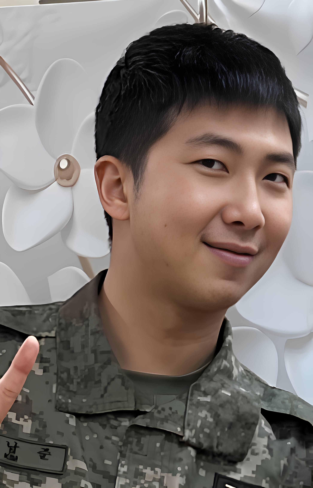

BTS's RM Powers Through NYC Promotions On Crutches Despite Painful Ankle Injury

Less than 12 hours after performing to over 100,000 fans at Gwanghwamun Square in Seoul, BTS leader RM was spotted navigating New York's JFK airport on crutches—a striking image that has both alarmed fans and sparked admiration for his unwavering dedication to the group's comeback.
The 31-year-old rapper and songwriter, whose real name is Kim Namjoon, suffered a painful ankle injury during rehearsals just two days before BTS's historic comeback concert on March 21. Despite medical advice to rest, RM performed throughout the two-hour show, sitting on a stool for most choreography while still delivering his signature verses with characteristic intensity.
Now, footage of BTS arriving in New York for their U.S. promotional tour has revealed the extent of RM's commitment—and raised serious questions about whether the grueling K-pop schedule prioritizes publicity over performer health.
The Injury: What We Know
According to an official statement from BigHit Music released on March 19, RM sustained his injury during a final dress rehearsal for the Gwanghwamun concert. The agency disclosed a detailed medical diagnosis that has left fans concerned.
"RM was diagnosed with a sprained accessory navicular bone, partial ligament damage, and a bruise to the talus," the statement read. "He has been advised to limit movement and receive ongoing treatment. However, after careful discussion with RM and medical professionals, he has decided to participate in scheduled activities with modified choreography."
The accessory navicular bone is a small extra bone located on the inner side of the foot, near the arch. While the bone itself is common (present in about 10% of the population), injuries to it can be particularly painful and slow to heal because of its location and the stress placed on the area during walking and standing.
The combination of injuries described—bone sprain, ligament damage, and bone bruising—suggests significant trauma that would typically require several weeks of rest and rehabilitation. The fact that RM proceeded with performances and international travel within days has drawn both praise for his professionalism and criticism of the industry's expectations.
The Seoul Concert: Performing Through Pain
At Saturday's "BTS Comeback Live: Arirang" concert, eagle-eyed fans noticed RM's limited mobility from the opening number. While other members executed their choreography as planned, RM remained seated on a specially positioned stool, joining the group for arm movements and upper-body choreography while keeping weight off his injured foot.
Despite these limitations, RM delivered powerful performances of his rap verses, including the group's new title track "Swim" and fan favorites like "MIC Drop" and "Dynamite." At several points during the concert, cameras captured him grimacing when adjusting his position, leading to waves of concern spreading across social media.
"You could see he was in pain, but he never let it affect his delivery," one attendee told media outlets after the show. "When he rapped his verse on 'Aliens,' he was completely in the zone. You'd never know anything was wrong from his voice alone."
The concert, which was livestreamed globally on Netflix, showed RM attempting to stand and move during the encore performance of "Spring Day." The moment—captured in thousands of fan recordings—showed him briefly putting weight on his injured foot before returning to his stool, a display of determination that has since been described by fans as both inspiring and heartbreaking.
The New York Arrival: "When Will He Rest?"
Just hours after the Seoul concert concluded, all seven BTS members boarded a flight to New York for the next phase of their promotional activities. The quick turnaround—less than 12 hours between the concert ending and their departure—has raised eyebrows among industry observers familiar with typical recovery protocols for performers.
Video footage from JFK airport shows RM moving carefully through the terminal with a single crutch, surrounded by security personnel and agency staff. While other members walked freely and waved to fans gathered at the arrival area, RM focused on navigating the crowded space, his expression a mix of exhaustion and forced cheerfulness.
Perhaps most concerning was a brief clip showing RM hurrying toward the waiting vehicle, attempting to keep pace with his bandmates despite his injury. Fans immediately noticed that he appeared to be using his crutch more as a support than as a full weight-bearing aid, suggesting he may have been minimizing its use for the cameras.
"It's not easy to depart on crutches," one fan account posted alongside the footage. "He looked bright despite using crutches, but you could see the strain. When will he rest?"
Fan Response: Admiration Mixed With Concern
The ARMY fandom has responded to RM's situation with a characteristic blend of unwavering support and genuine worry. Social media platforms have been flooded with messages praising his dedication while simultaneously calling for better care from his agency.
"We respect his decision to perform, but this is exactly why K-pop needs better health protocols," wrote one widely-shared post. "No artist should have to choose between their health and disappointing fans. BigHit needs to protect him better."
Others have pointed out the impossible position RM faces as BTS's leader. With the group's comeback being one of the most anticipated events in K-pop history—and with significant commercial stakes involved—pulling out of scheduled activities would have had ripple effects extending far beyond the group itself.
"He's not just performing for himself or even just for ARMY," another fan observed. "There are hundreds of staff members, venue contracts, broadcast deals, and international partnerships riding on this comeback. Namjoon knows all of that. He's carrying a lot more than an injury."
The "Faking" Controversy
Not all reactions have been sympathetic. A small but vocal minority of critics have questioned whether RM's injury is as serious as reported—or whether it's being exaggerated for sympathy and media attention.
Some pointed to footage showing RM occasionally switching which hand held the crutch, claiming this suggested inconsistency. Others noted that he appeared to briefly walk without assistance at certain moments, fueling speculation that the injury was being dramatized.
Medical professionals who reviewed the available footage were quick to dismiss these claims. "Patients with the described injuries often have good moments and bad moments throughout the day," explained one orthopedic specialist familiar with K-pop performer injuries. "Pain levels fluctuate, and people naturally try to appear functional in public. None of the footage contradicts the diagnosis."
The controversy has nonetheless added another layer of stress to an already challenging situation, with fans organizing defense campaigns against what they view as bad-faith criticism of RM's character.
What's Next: A Packed U.S. Schedule
BTS's American promotional tour includes a dense schedule of appearances over the coming days. The group is set to appear on major talk shows, radio programs, and streaming showcases—including a high-profile Spotify fan event that took place Sunday evening.
BigHit Music has confirmed that RM will participate in all scheduled activities, with accommodations made for his mobility. This includes having seated interview setups available and reducing standing time during promotional appearances.
The Netflix documentary "BTS: The Return," set to premiere this Friday, will likely provide additional context for RM's injury and recovery process. Early reports suggest the two-part film captures candid moments from the comeback preparation, including footage from the rehearsal session where the injury occurred.
For now, fans can only watch and hope that their leader takes whatever rest he can between commitments. As one particularly poignant fan message put it: "Namjoon always tells us to take care of ourselves. I wish he'd take his own advice."
The Bigger Picture: K-Pop's Health Crisis
RM's situation has reignited broader conversations about performer health in the K-pop industry. The genre's demanding schedules—which often involve back-to-back international appearances, minimal rest periods, and expectations of physical perfection—have been criticized by health advocates for years.
Previous incidents involving other artists have led to temporary reforms, but the fundamental structure of K-pop promotion remains largely unchanged. Artists are expected to maintain grueling schedules during comeback periods, with illness or injury seen as obstacles to overcome rather than signals to stop.
"The industry treats performers like machines," one former K-pop trainee wrote on social media. "I've seen countless artists perform through injuries, exhaustion, and illness because stopping isn't an option. RM is just the most visible example of a systemic problem."
Whether BTS's unprecedented influence can drive meaningful change in industry practices remains to be seen. For now, RM continues to perform on crutches, embodying both the extraordinary dedication and the troubling demands that define modern K-pop.
BTS's "ARIRANG" album is available now on all streaming platforms. Their U.S. promotional tour continues through March 28.